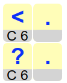

Ratkaisu
Aloitetaan asettamalla ohjeiden mukaisesti ruudun A1 kortti ensimmäiseksi. Kortissa lukee C2, joten ruudun C2 kortti asetetaan toiseksi. Tässä kortissa taas puolestaan lukee B3, joten ruudun B3 kortti asetetaan kolmanneksi. Samaan tapaan jatkaen ruudun C1 kortti asetetaan neljänneksi ja ruudun E3 kortti viidenneksi. Ratkaisu on valmis:

Muodostetaan ratkaisu päinvastaisessa järjestyksessä: asettelemme kortit järjestyksessä oikealta vasemmalle.
Aloitetaan asettamalla ohjeiden mukaisesti ruudun F3 kortti viimeiseksi. Toiseksi viimeiseksi valittavassa kortissa pitää lukea tämän kortin sijainti eli F3. Ruudukossa vain ruudun E1 kortissa lukee F3, joten asetetaan ruudun E1 kortti toiseksi viimeiseksi.

Kolmanneksi viimeisessä kortissa pitää lukea E1. Ainoa vaihtoehto on ruudun B2 kortti. Samaan tapaan jatkaen neljänneksi viimeiseksi (= toiseksi) kortiksi pitää valita ruudun D2 ja viidenneksi viimeiseksi (= ensimmäiseksi) ruudun C3 kortti. Ratkaisu on valmis:

Muodostetaan ratkaisu päinvastaisessa järjestyksessä: asettelemme kortteja järjestyksessä oikealta vasemmalle.
Aloitetaan valitsemalla ohjeiden mukaisesti ruudun C6 kortti viimeiseksi (raahataan se vastausalueen oikeaan laitaan).

Toiseksi viimeiseksi valittavassa kortissa pitää lukea C6. Ruudukossa on kaksi mahdollisuutta: sekä ruudun A2 että A5 korteissa lukee C6. Muodostetaan vastausalueelle allekkain kumpaakin vaihtoehtoa vastaavat osaratkaisut.

Nyt kolmanneksi viimeisessä kortissa pitää vaihtoehdosta riippuen lukea joko A2 tai A5. A2 löytyy korteista B3 ja C4, ja A5 kortista C2. Laajennetaan vastausalueen osaratkaisuita kattamaan nämä vaihtoehdot.

Neljänneksi viimeisessä (= toisessa) kortissa pitää vaihtoehdosta riippuen lukea joko B3, C4 tai C2. B3 löytyy korteista A1 ja C5, C4 kortista A3, ja C2 kortista C1. Laajennetaan jälleen vastausalueen osaratkaisuita kattamaan nämä vaihtoehdot.

Viidenneksi viimeisessä (= ensimmäisessä) kortissa pitää vaihtoehdosta riippuen lukea joko A1, C5, A3 tai C1. A1 ei esiinny yhdessäkään, joten sitä vastaava osaratkaisu hylätään. Muissa osaratkaisuissa C5 on kortissa A4, A3 kortissa B6 ja C1 kortissa A6. Kun laajennamme vastausalueen osaratkaisut kattamaan nämä vaihtoehdot, on lopullinen ratkaisu valmis. Se koostuu täsmälleen kolmesta 5 merkin salasanasta, kuten tehtävässä haluttiinkin:

Tämä on tietojenkäsittelyä!
Tietokone tallettaa käsittelemänsä datan keskusmuistiin. Muistia voidaan havainnollistaa tehtävän tapaan ruudukkona, jossa kukin ruutu kuvaa yksittäistä muistikohtaa, johon voidaan tallettaa yksittäinen arvo. Jokaisella muistikohdalla on sen sijainnin ilmaiseva muistiosoite (tässä tehtävässä ruuduilla oli koordinaatit).
Yksittäiseen muistikohtaan voidaan tallettaa tavallisen arvon (esim. lukuarvo) sijaan tieto siitä, missä jokin arvo sijaitsee: tällöin muistikohtaan talletetaankin arvon sijaan muistiosoite. Tällöin voidaan sanoa, että muistikohta viittaa tai osoittaa toiseen muistikohtaan (siihen, jonka muistiosoitteen ensiksi mainittu muistikohta sisältää). Se tapa, miten tehtävän kortteihin oli kirjattu niitä seuraavien korttien koordinaatit, vastaa toiseen muistikohtaan (tehtävässä kortin koordinaatteihin) osoittamista.
Tällaisella viittaus/osoitusmekanismilla on tärkeä rooli tietokoneohjelmien toteuttamisessa.
Katso lisää esim. https://fi.wikipedia.org/wiki/Keskusmuisti ja https://en.wikipedia.org/wiki/Pointer_(computer_programming) (englanniksi).